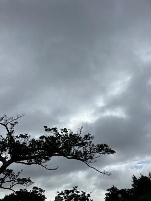
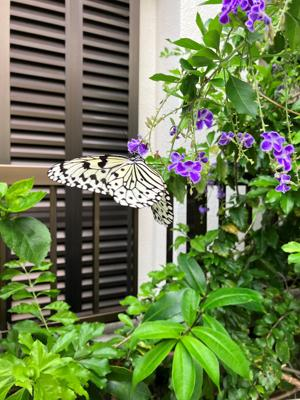

うるがいの話 ある日
最新: 蜂に刺される（それも２か所）【うるがいの話 ある日】とは 一日だけのプログです
『うるがいの話』の最新一日だけのプログで、通信料が少なく経済的だ。カニの画像をクリックすると全ての日付が載る『うるがいの話』サイトを表示します
|
|
【うるがいの話】 うるがい(ｳﾙｶﾞｲ urugai)とは、『もずくがに』の名前でとても大きくなります。 |
|---|---|
|
|
【カミマヤーの話】 猫のことを方言でマヤーといいます。カミマヤー（kamimayaa）とは、神の猫のことです。 |
|
【たながぁの音楽】 たながぁ（ﾀﾅｶﾞｰ tanagaa）とは手長えびのことで、何種類かあり大きいのは車 エビぐらいになります。 |

|
【ぶながぁの話】 ぶながぁ(ﾌﾞﾅｶﾞｰ bunagaa)とは、赤い髪の毛、赤い身体、そして身長は１ｍ２０ｃｍ ぐらい、川の蟹を食べているの目撃された。場所は沖縄県国頭郡大宜味村のと ある村僕の隣近所に住んでいる爺さんから、聞いた話です。 |
|
|
【ギーマの話】 ギーマ(giima)とは、山原の里山に咲くスズランに似た、 花を付けます。実は食べられます、 気が付くと口の周りが紫になっています。 |
2023年05月30日 (火）蜂に刺される（それも２か所）
18:44

夕方、ヨメが窓ガラスに蜂がいる！と騒ぐ、素早く虫取り網で蜂を捕まえるよ
うと、窓ガラスと網で蜂を押さえた。そして、左手で背中を押さえようと蜂に
触れると、チク、おおおおおおお、痛い。ヤバイ、針が刺さったかも・・・・
それでも、蜂はまだいる。そしてまともや、窓ガラスと網で挟み今度は、ポテ
ットチップの袋（お菓子が少し入っている）で、叩こうと右手で蜂をポテチの
袋で抑えた、あが！、右手が刺された。痛い、針が刺さった痛みである。おお
ヤバイ・・・、蜂を叩き潰そうとするがなかなか、仕方ないので窓ガラスを開
けて外へ逃がす。中学生の時、蜂に刺されたことはあったが、それ以来である
しばらくすると、左での痛みが無くなり、やがて右手の痛みもなくなった。血
は出てないし、針もない、とりあえずマキロンをシュする。ふむふむ、不思議
だなと、ネットで「蜂に刺される時」のスピリチュアルでの象徴や意味を調べ
た。
スピリチュアルの世界で蜂に刺される時は、幸せが訪れる前触れです。
ミツバチなどの蜂は、実は神様と深い結びつきがあります。
良いお知らせを携えて、あなたの元にやって来ます。
金運が上がってお金持ちになる、恋愛運が上がってかっこいい恋人ができるな
ど、この先の未来は華やかなことがありそうです。
大きな幸せを胸に抱きながら、進んでみてください。
と、書いてあった。蝶もいれば、蜂もいるのである。

１８時４０分 ビットコインの総資産 ￥１１、３２０（↓４９）